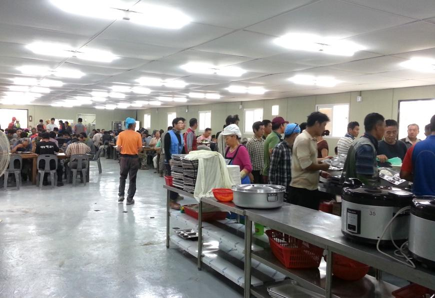
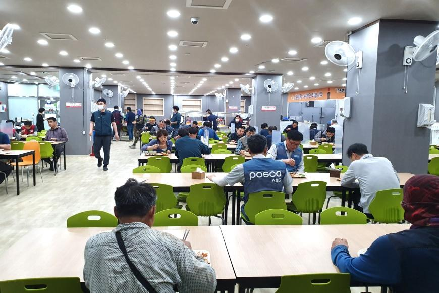
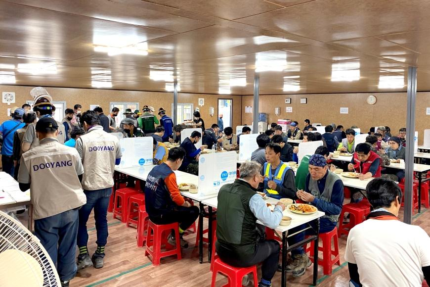
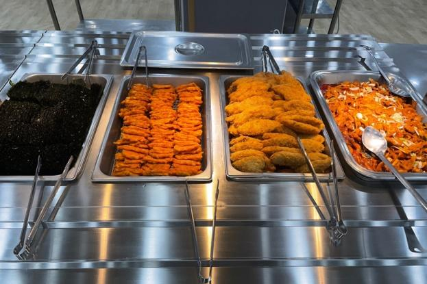
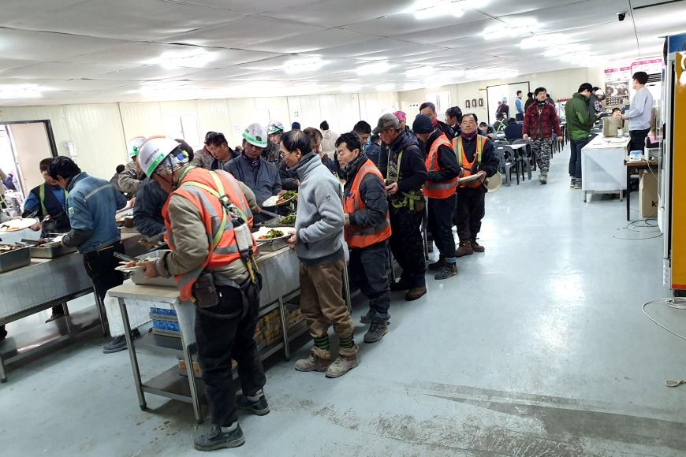
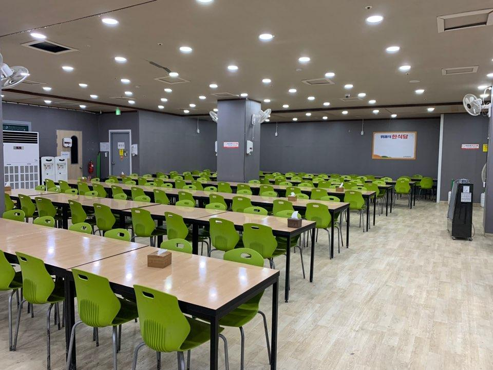
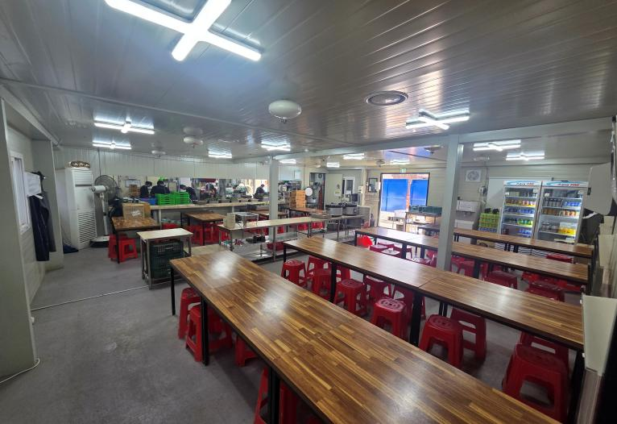
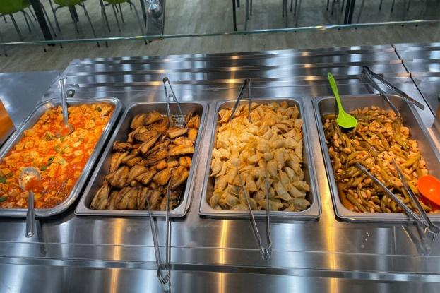
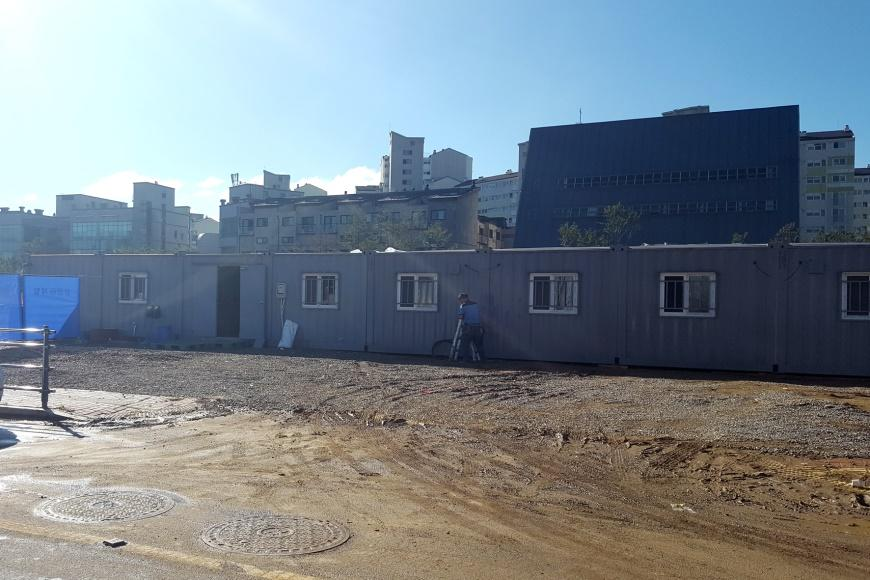
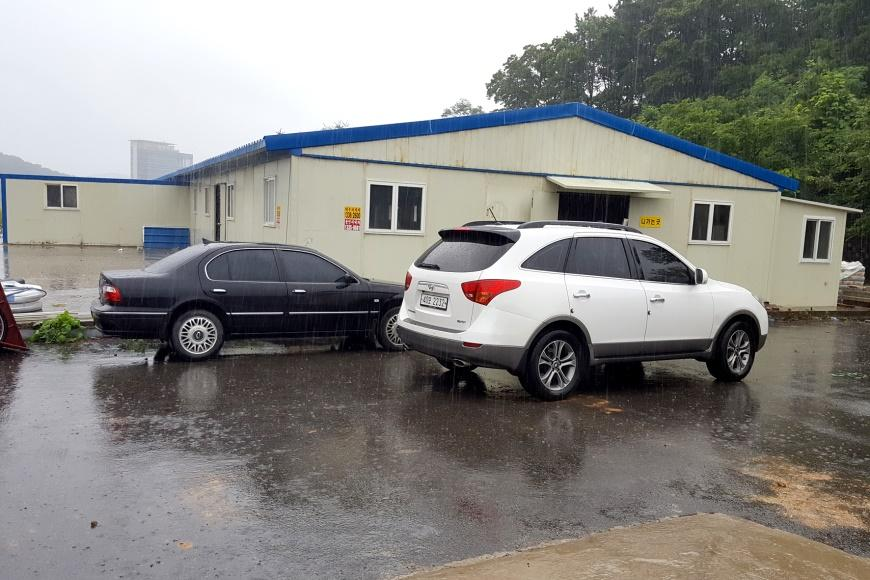

전국 주요 건설현장에서 검증된 현장식당 운영 경험입니다.
| 연도 | 현장식당명 | 건설사 | 출력인원 | 운영기간 |
|---|---|---|---|---|
| 2026 | 안양 관양고주변 도시개발사업 | DL이앤씨 | 1,200명 | 2026. 3 ~ |
| 2025 | 군포 대아미 공공아파트 | 금강주택 · SGC건설 외 2개사 | 2,000명 | 2025. 10 ~ |
| 2021 | 과천 지식정보타운 단지 | SK건설 · 현대엔지니어링 외 | 4,000명 | 2021 ~ 2025 |
| 2021 | 삼척 석탄화력발전소 | 포스코건설 · 두산건설 | 1,000명 | 2021 ~ 2024 |
| 2021 | 안양 융창지구 아파트 재개발 | 코오롱건설 외 | 1,800명 | 2021 ~ 2023 |
| 2021 | 의왕 백운호수 롯데쇼핑몰 | 롯데건설 외 | 1,500명 | 2020 ~ 2022 |
| 2020 | 안양 덕현지구 아파트 재개발 | 대림건설 · 코오롱건설 | 2,000명 | 2020 ~ 2023 |
| 2018 | 용인 힐스테이트 현장 | 현대엔지니어링 | 1,200명 | 2018 ~ 2020 |
| 2016 | 군포 첨단산업단지 내 | 삼우종합건설 외 | 1,000명 | 2016 ~ 2017 |
| 2016 | 마곡 개발사업단지 내 | 대림건설 외 | 2,000명 | 2016 ~ 2018 |
| 2013 | 평촌 스마트스퀘어 단지 내 | LG서브원 외 | 3,000명 | 2013 ~ 2015 |
* 출력인원은 현장 최대 식수 기준이며, 운영기간은 현장 상황에 따라 변동될 수 있습니다.
전국 건설현장에서 직접 운영한 현장식당의 실제 모습입니다.

현장식당 배식 모습
현장식당 내부
현장식당 내부
제공 식단
현장식당 배식 모습
현장식당 내부
현장식당 내부
제공 식단
현장식당 외관
현장식당 외관